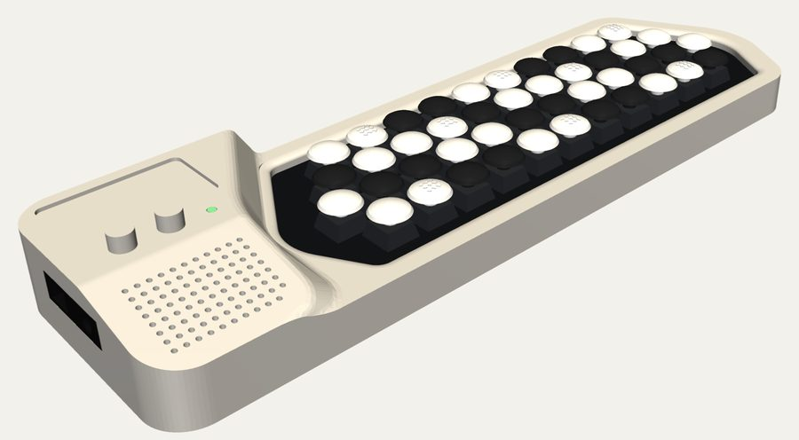
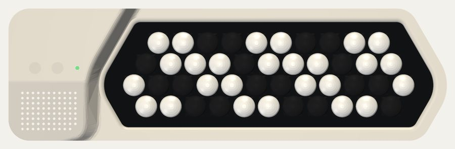
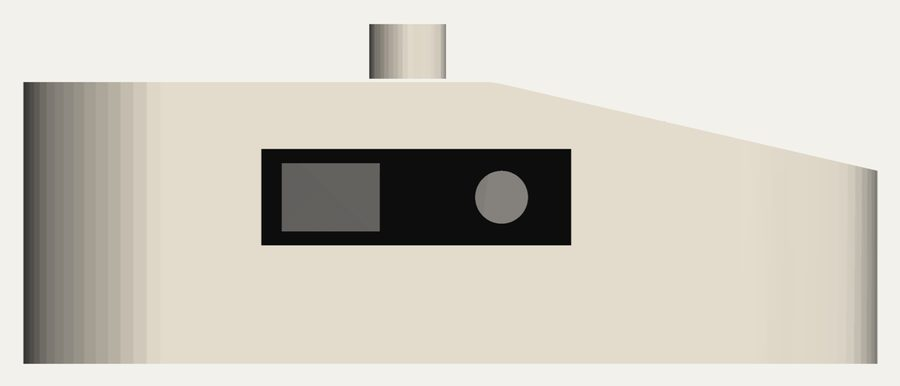
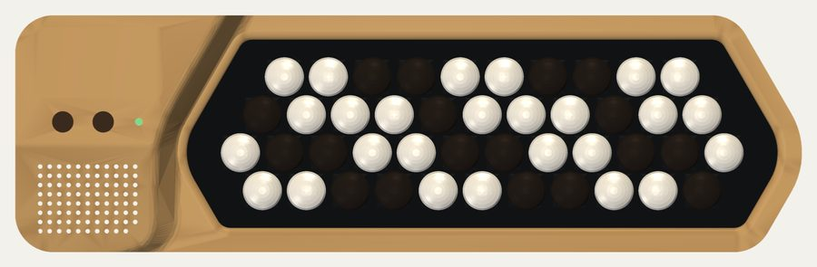
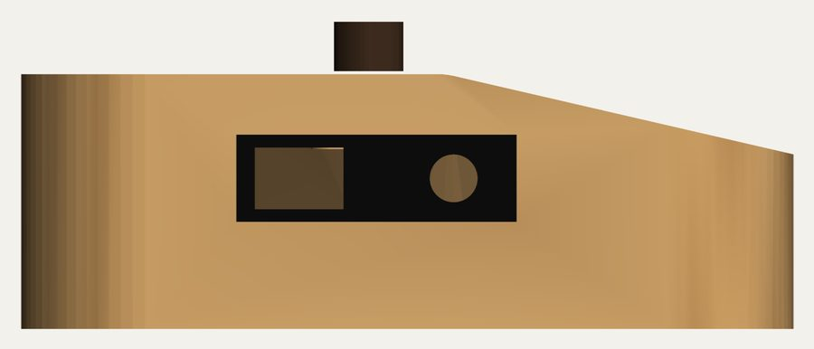
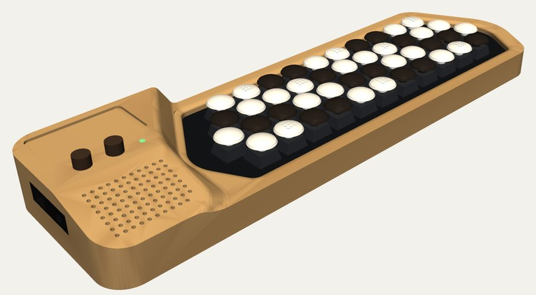
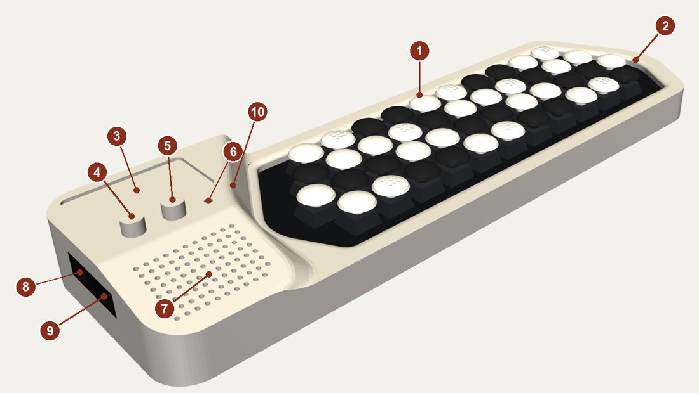
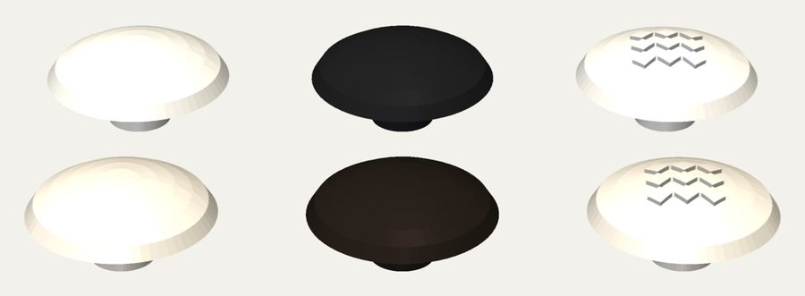

BeatConfused Studio
The eTuttino's case
The eTuttino in its own case: a C-griff keyboard of 44 buttons on an 18.5 mm hexagonal grid, with the interface on the left. One shape, two finishes. This is the design ready to be made; to build one, see the manuals.


Two finishes, one shape
Seixo and Madeira
Both versions have exactly the same outside; only the material and the way it is made change. Click any picture to see it larger.
Seixo
Plastic in one colour, printed in resin (SLA) or nylon (MJF). Light-grey case, white and black buttons. 2.5 mm walls; the bottom is screwed on from below.




Madeira
White oak, cut on a 3-axis CNC in two setups (the top, then turned over for the pocket inside), oil finish. Mother-of-pearl and ebony buttons. 4 mm walls, a thin bottom cover, and a 3 mm light pipe for the LED, sanded flush with the wood.






Anatomy
What is where


- Keyboard area: 44 buttons, C-griff, rows 16.02 mm apart. The opening keeps one button (15 mm) of clearance along the diagonal ends, the "<" on the left and ">" on the right.
- Rounded chamfer round the opening, 4 mm wide and 2 mm deep, in the case's own material.
- Screen zone: an engraving or a sticker on the eTuttino; the 1.9" screen goes here on the eTuttiChorus.
- Volume: a pot.
- Instrument selector: an endless encoder with a click.
- LED: orange at power-up, green while playing, red blinking on a problem.
- Grille on the front part of the interface, which slopes down at 13° towards the player: ventilation on the eTuttino, the speaker's opening on the eTuttiChorus.
- Micro-USB on the left face, in a black insert, away from the playing hand.
- Headphones (3.5 mm jack), beside it.
- Rounded ramp from the interface (33 mm) down to the keyboard deck. It runs straight towards the front, so a flat stretch of deck is left beside row 1 for the left hand.
Buttons
Low domes with a skirt
One cap shape for every key: a low convex dome, 15 mm across, flaring to a 16.5 mm skirt (2 mm between neighbours), on a standard MX cross. White for the natural notes, black for the sharps. The Cs and Fs are white with a raised diagonal check on top, to find your place by touch.


The family
eTuttino, eTutti, eTuttiChorus
The bigger models are variations of this case. Only the eTuttino is designed in full; the other two are still in development.
| eTuttino | eTutti | eTuttiChorus | |
|---|---|---|---|
| Status | designed, ready to make | in development | in development |
| Buttons | 44 | 48 (one more per row) | 48 |
| Range | G3–E6 | G3–G6 | G3–G6 |
| Length | ≈ 331 mm | ≈ 350 mm | ≈ 350 mm |
| Sound | headphones / line | headphones / line | speaker + headphones |
| Screen | — (engraving) | — (engraving) | 1.9" colour, 320 × 170 |
| Power | USB | USB | battery or USB |
| Teensy + Audio Board stack | ≈ 13 mm | ≈ 13 mm | ≤ 10 mm (under the screen) |
The eTutti adds F♯6, G6, F6 and D♯6 at the right end of rows 1 to 4: three full octaves.
Measurements
The eTuttino in numbers
| Size | 331 × 100 mm |
|---|---|
| Height, interface | 33 mm |
| Height, top of the buttons | 26.6 mm |
| Height, deck round the keys | 17.4 mm |
| Button pitch | 18.5 mm, hexagonal |
| Seixo | resin (SLA) or nylon (MJF), one colour |
| Madeira | white oak, oil finish |
| Case weight, estimated | Seixo ≈ 170 g · Madeira ≈ 125 g |
Weights are for the case alone (shell and bottom), from the model's volume: resin at 1.15 g/cm³, oak at 0.75 g/cm³.
O eTuttino no seu case: um teclado C-griff de 44 botões numa grade hexagonal de 18,5 mm, com a área de interface à esquerda. Uma forma, dois acabamentos. Este é o projeto pronto para fabricar; para montar o seu, veja os manuais.
Dois acabamentos, mesma forma
Seixo e Madeira
As duas versões têm exatamente o mesmo exterior; só mudam o material e a fabricação. Clique numa figura para vê-la maior.
Seixo
Plástico de uma cor só, impresso em resina (SLA) ou nylon (MJF). Case cinza-claro, botões brancos e pretos. Paredes de 2,5 mm; o fundo é parafusado por baixo.
Madeira
Carvalho branco, fresado num CNC de 3 eixos em duas fixações (o topo e, virado, o bolsão interno), acabamento a óleo. Botões madrepérola e ébano. Paredes de 4 mm, tampa de fundo fina e um condutor de luz (light pipe) de 3 mm para o LED, lixado rente à madeira.
Anatomia
O que fica onde
- Área do teclado: 44 botões, C-griff, fileiras a 16,02 mm. A abertura deixa a folga de um botão (15 mm) nas pontas diagonais, o "<" à esquerda e o ">" à direita.
- Chanfro arredondado em volta da abertura, de 4 mm de largura e 2 mm de queda, no mesmo material do case.
- Zona da tela: gravação ou adesivo no eTuttino; no eTuttiChorus, a tela de 1,9" fica aqui.
- Volume: um potenciômetro.
- Seletor de instrumento: um encoder de giro infinito, com clique.
- LED: laranja ao ligar, verde tocando, vermelho piscando com problema.
- Grade na parte da frente da interface, que desce a 13° para quem toca: ventilação no eTuttino, saída do alto-falante no eTuttiChorus.
- Micro-USB na face esquerda, num inserto preto, longe da mão que toca.
- Fone (jack de 3,5 mm), ao lado.
- Rampa arredondada da interface (33 mm) até o tampo do teclado. Ela desce reta para a frente, e assim sobra um trecho de tampo plano ao lado da fileira 1 para a mão esquerda.
Botões
Domos baixos com saia
Um só formato de capa para todas as teclas: um domo convexo baixo de 15 mm, que abre numa saia de 16,5 mm (2 mm entre vizinhas), com encaixe em cruz MX. Branco nas notas naturais, preto nos sustenidos. Os Dós e Fás são brancos com um xadrez diagonal em relevo no topo, para achar a posição no tato.
A família
eTuttino, eTutti, eTuttiChorus
Os modelos maiores são variações deste case. Só o eTuttino está projetado por inteiro; os outros dois ainda estão em desenvolvimento.
| eTuttino | eTutti | eTuttiChorus | |
|---|---|---|---|
| Situação | projetado, pronto para fabricar | em desenvolvimento | em desenvolvimento |
| Botões | 44 | 48 (um a mais por fileira) | 48 |
| Extensão | Sol3–Mi6 | Sol3–Sol6 | Sol3–Sol6 |
| Comprimento | ≈ 331 mm | ≈ 350 mm | ≈ 350 mm |
| Som | fone / linha | fone / linha | alto-falante + fone |
| Tela | — (gravação) | — (gravação) | 1,9" colorida, 320 × 170 |
| Alimentação | USB | USB | bateria ou USB |
| Pilha Teensy + Audio Board | ≈ 13 mm | ≈ 13 mm | ≤ 10 mm (sob a tela) |
O eTutti acrescenta Fá♯6, Sol6, Fá6 e Ré♯6 na ponta direita das fileiras 1 a 4: três oitavas completas.
Medidas
O eTuttino em números
| Tamanho | 331 × 100 mm |
|---|---|
| Altura da interface | 33 mm |
| Altura do topo dos botões | 26,6 mm |
| Altura do tampo do teclado | 17,4 mm |
| Passo dos botões | 18,5 mm, hexagonal |
| Seixo | resina (SLA) ou nylon (MJF), uma cor |
| Madeira | carvalho branco, acabamento a óleo |
| Peso do case, estimado | Seixo ≈ 170 g · Madeira ≈ 125 g |
Os pesos são só do case (corpo e fundo), a partir do volume do modelo: resina a 1,15 g/cm³, carvalho a 0,75 g/cm³.
El eTuttino en su propia caja: un teclado C-griff de 44 botones en una rejilla hexagonal de 18,5 mm, con la zona de interfaz a la izquierda. Una forma, dos acabados. Es el diseño listo para fabricar; para armar el tuyo, mira los manuales.
Dos acabados, la misma forma
Seixo y Madeira
Las dos versiones tienen exactamente el mismo exterior; solo cambian el material y la fabricación. Haz clic en una figura para verla más grande.
Seixo
Plástico de un solo color, impreso en resina (SLA) o nailon (MJF). Caja gris claro, botones blancos y negros. Paredes de 2,5 mm; el fondo se atornilla desde abajo.
Madeira
Roble blanco, fresado en un CNC de 3 ejes en dos sujeciones (la cara superior y, dada la vuelta, el vaciado interior), acabado al aceite. Botones nácar y ébano. Paredes de 4 mm, una tapa de fondo fina y un conductor de luz (light pipe) de 3 mm para el LED, lijado a ras de la madera.
Anatomía
Qué va dónde
- Zona del teclado: 44 botones, C-griff, filas a 16,02 mm. La abertura deja la holgura de un botón (15 mm) en los extremos diagonales, el "<" a la izquierda y el ">" a la derecha.
- Chaflán redondeado alrededor de la abertura, de 4 mm de ancho y 2 mm de caída, en el mismo material de la caja.
- Zona de la pantalla: grabado o adhesivo en el eTuttino; en el eTuttiChorus va aquí la pantalla de 1,9".
- Volumen: un potenciómetro.
- Selector de instrumento: un encoder sin fin, con clic.
- LED: naranja al encender, verde al tocar, rojo parpadeando si hay un problema.
- Rejilla en la parte delantera de la interfaz, que baja a 13° hacia quien toca: ventilación en el eTuttino, salida del altavoz en el eTuttiChorus.
- Micro-USB en la cara izquierda, en un inserto negro, lejos de la mano que toca.
- Auriculares (jack de 3,5 mm), al lado.
- Rampa redondeada desde la interfaz (33 mm) hasta la cubierta del teclado. Baja recta hacia delante, y así queda un tramo de cubierta plana junto a la fila 1 para la mano izquierda.
Botones
Domos bajos con faldón
Una sola forma de tapa para todas las teclas: un domo convexo bajo de 15 mm que se abre en un faldón de 16,5 mm (2 mm entre vecinas), con encaje en cruz MX. Blanco en las notas naturales, negro en los sostenidos. Los Do y Fa son blancos con un damero diagonal en relieve arriba, para encontrar la posición al tacto.
La familia
eTuttino, eTutti, eTuttiChorus
Los modelos mayores son variaciones de esta caja. Solo el eTuttino está diseñado por completo; los otros dos siguen en desarrollo.
| eTuttino | eTutti | eTuttiChorus | |
|---|---|---|---|
| Estado | diseñado, listo para fabricar | en desarrollo | en desarrollo |
| Botones | 44 | 48 (uno más por fila) | 48 |
| Extensión | Sol3–Mi6 | Sol3–Sol6 | Sol3–Sol6 |
| Largo | ≈ 331 mm | ≈ 350 mm | ≈ 350 mm |
| Sonido | auriculares / línea | auriculares / línea | altavoz + auriculares |
| Pantalla | — (grabado) | — (grabado) | 1,9" a color, 320 × 170 |
| Alimentación | USB | USB | batería o USB |
| Pila Teensy + Audio Board | ≈ 13 mm | ≈ 13 mm | ≤ 10 mm (bajo la pantalla) |
El eTutti añade Fa♯6, Sol6, Fa6 y Re♯6 en el extremo derecho de las filas 1 a 4: tres octavas completas.
Medidas
El eTuttino en números
| Tamaño | 331 × 100 mm |
|---|---|
| Altura de la interfaz | 33 mm |
| Altura de la parte superior de los botones | 26,6 mm |
| Altura de la cubierta del teclado | 17,4 mm |
| Paso de los botones | 18,5 mm, hexagonal |
| Seixo | resina (SLA) o nailon (MJF), un color |
| Madeira | roble blanco, acabado al aceite |
| Peso de la caja, estimado | Seixo ≈ 170 g · Madeira ≈ 125 g |
Los pesos son solo de la caja (cuerpo y fondo), a partir del volumen del modelo: resina a 1,15 g/cm³, roble a 0,75 g/cm³.